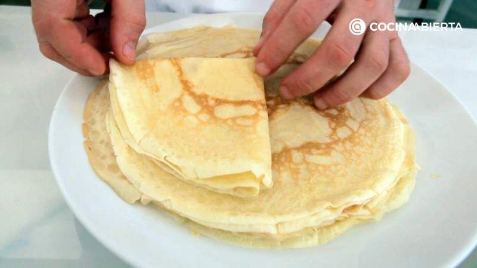

Macarrones con tomate y queso

- 1 cebolla grande
- 4 cucharadas de aceite de oliva
- 4 dientes de ajo
- 800g de tomate en conserva
- 1 o 2 hojas de laurel
- 1 cucharada de albahaca seca
- 1 cucharada de orégano seco
- Pimienta negra molida
- Sal
- 400g de macarrones
- Queso rallado (para servir)
Croquetas de jamón
- 200g de jamón serrano
- 1 cebolleta
- 1 diente de ajo
- 100g de harina
- 100g de mantequilla
- 1L de leche
Crepes

- 2 huevos
- 125g de harina
- 5g de azúcar
- 250ml de leche
Ensaladilla rusa

- 350g de guisantes
- 1kg de patatas
- 450g de atún en conserva
- 600g de zanahoria
- 4 huevos
- Sal (al gusto)
- Mayonesa
- 12 aceitunas sin hueso
Tortilla de patatas
- 4 patatas
- 2 cebollas
- 4 huevos
- Sal
- Aceite de oliva